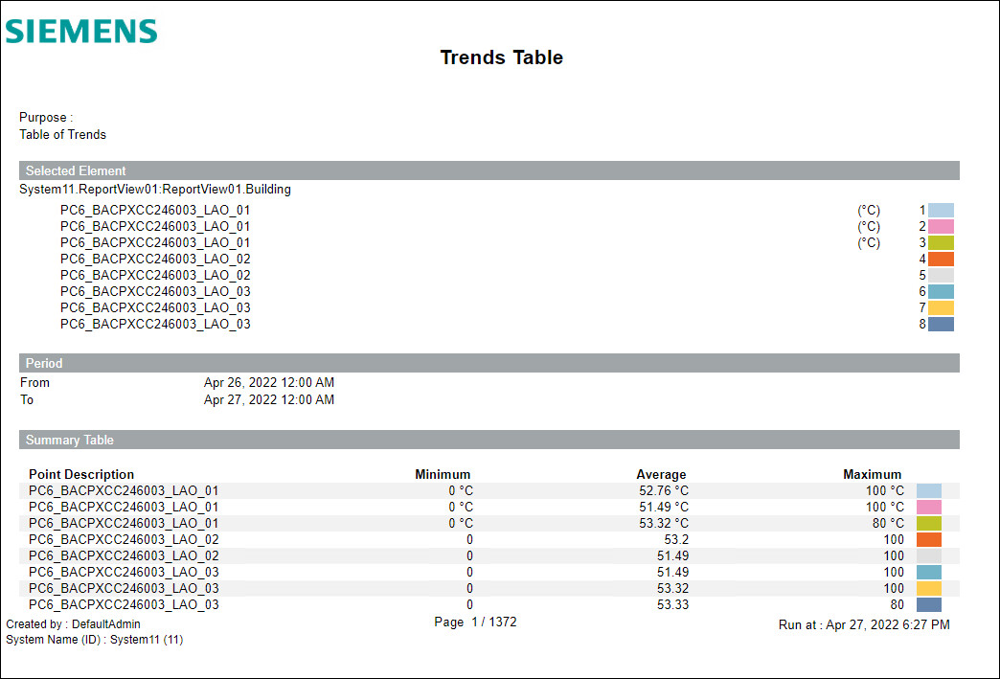
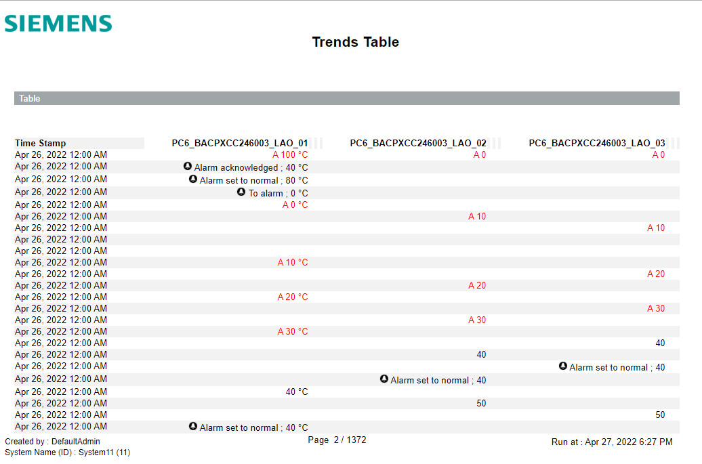

Custom Trend Table Report 1
This report is designed to show values of multiple trended objects compared over a range of time. A separate column displays for each trended data point. Additionally, if the data point was in alarm at the time of the reported value, the color of that value displays in red.
Sample reports


Legend
Indicator | Description for Table | Description for Graphic |
|---|---|---|
! | Bad value | Bad value |
Arrow Up – Red | Over high limit | Pass high limit or return from low limit |
Arrow Down – Blue | Below low limit | Return from or pass low limit |
Pencil | Manual correction | Manual correction |
? | Fault | Not applicable |
A | Alarm | Not applicable |
OfS | Out of Service | Not applicable |